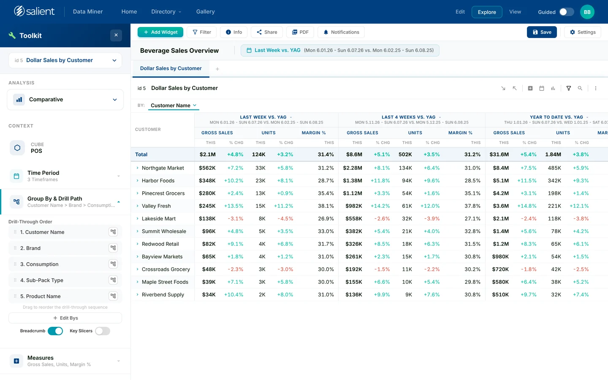
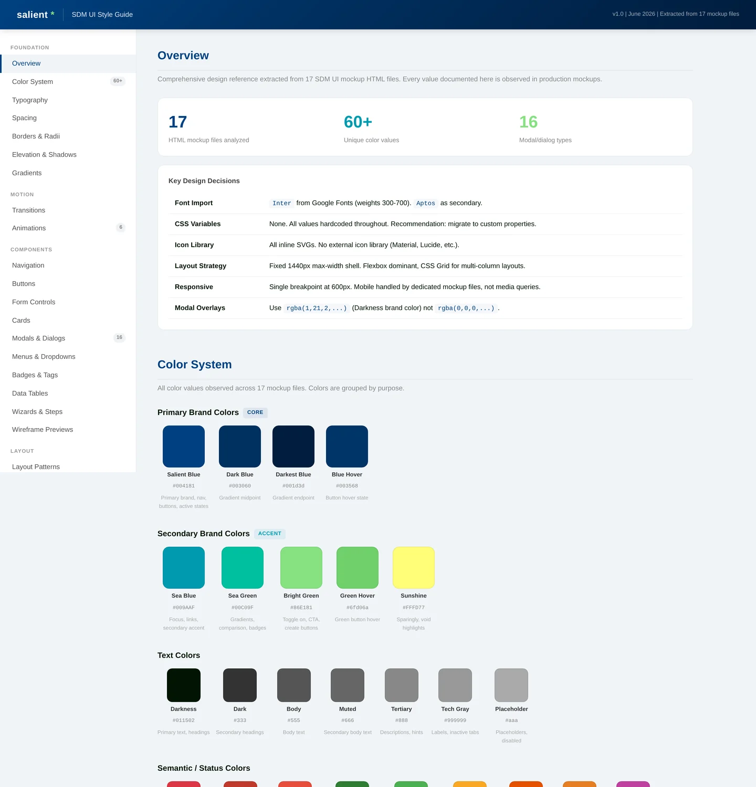
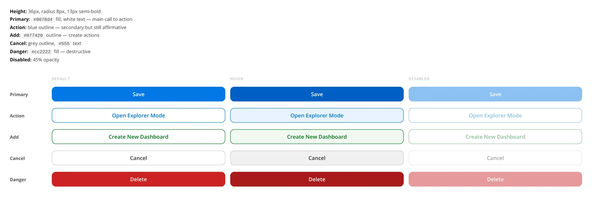
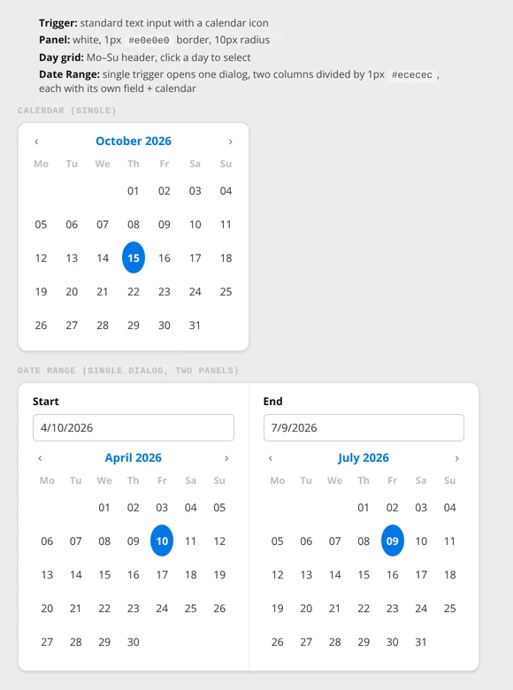
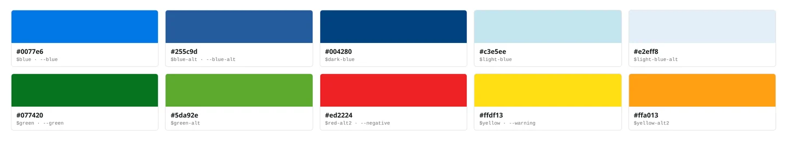
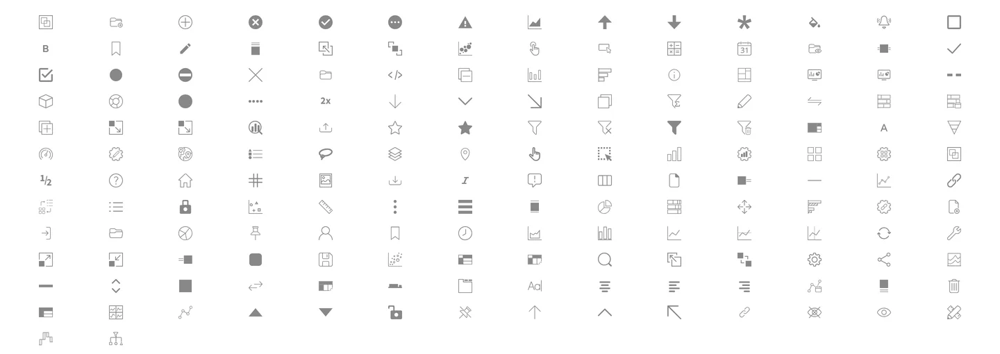

Portfolio
Each line is a problem someone had. Open it to see what I made.
Client names and figures in the Salient screens are placeholders.
One company website has to speak to six different industries. Fieldline website concept Concept
A 15-page marketing site for a fictional business-performance software company: home, six industry pages, customers, how we work, careers, a resource guide, blog and contact. Hand-built in HTML, CSS and JavaScript, with shared templates so the header, menu and footer stay identical on every page.


Analysts compare three time periods across a dozen columns, and the grid still has to read at a glance. Explore view Salient
A comparison grid beside a toolkit panel. Cube, time periods, drill path and measures are set on the left; the grid on the right stays scannable with every comparison on screen.

Nobody could find a dashboard unless they knew who saved it and where. Directory redesign Salient
Search comes first. Bookmarks and dashboards are separated, and people choose how much detail each card shows.

Every setup dialog worked a little differently, so people had to relearn each one. Configure dialog Salient
Group by, measures, date ranges, filters and options in one dialog with one shared pattern: available on the left, selected on the right.

Developers were guessing at colors, spacing and button states. Design system Salient
Color, type, buttons, form controls and a single-weight icon set, documented so new screens get built the same way every time.





Sometimes creativity needs a spark. Creative Spark dodill
Two random words, and a refresh button for more. Use them to start a story, a sketch, a poem or a conversation. The only rule is to make something that's yours.

Transferring a reference image to a canvas at the right size. Image Grid Tool dodill
Upload an image, set the canvas size in inches and DPI, position the image, then lay a grid over it with your own rows, columns, line color and weight. Save the result and print it.

Pulling a usable color palette out of an image. Color Palette Maker dodill
Generate a palette at random or extract one from an uploaded image. Lock the colors you like, regenerate the rest, and export in HEX, RGB or HSL.

A college with no presence on social media. Founded every social channel Elmira College
Created the college's first Facebook, Twitter, YouTube and Instagram accounts, and set the content and goals for each.

A college website that wasn't working for prospective students. Website redesign Elmira College
Led the full redesign of the college website.